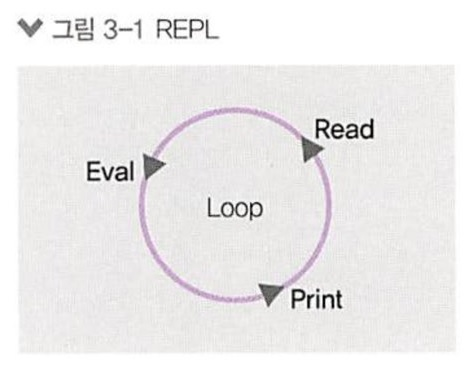
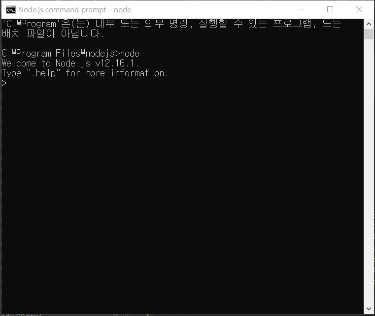
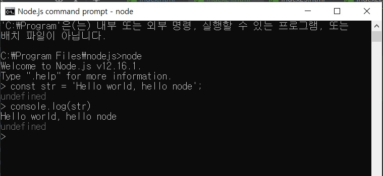

REPL 사용하기
- REPL 사용하기
-
자바스크립트는 스크립트 언어이므로 미리 컴파일을 하지 않아도 즉석에서 코드를 실행할 수 있습니다.
이전 장에서 브라우저 콘솔 탭에서 자바스크립트 코드를 입력해보았을 것입니다.
노드도 비슷한 콘솔을 제공하는데, 입력한 코드를 읽고(Read), 해석하고(Eval), 결과물을 반환하고(Print), 종료할 때까지 반복(Loop)한다고 해서
REPL(Read Eval Print Loop)이라고 부릅니다.

노드의 REPL을 직접 사용해보겠습니다.
윈도에서는 명령 프롬포트, 맥이나 리눅스에서는 터미널을 열고 node를 입력합니다.
VS Code에서는 Ctil+`를 누르면 터미널을 켤 수 있습니다.
앞으로는 명령 프롬프트나 터미널을 콘솔이라고 통칭하겠습니다.

프롬프트가 > 모양으로 바뀌었다면 자바스크립트 코드를 입력할 수 있습니다.
간단한 문자열을 출력해봅시다.

위와 같이 출력되었다면 성공입니다.
여러분이 입력한 코드를 REPL이 읽고(Read) 해석(Eval)한뒤 바로 결과물을 출력해주었습니다(Print).
그리고 종료되기 전까지 여러분의 입력을 기다립니다(Loop).
REPL을 종료하려면 Ctrl+C를 두 번 누르거나, REPL 창에 .exit를 입력하면됩니다.